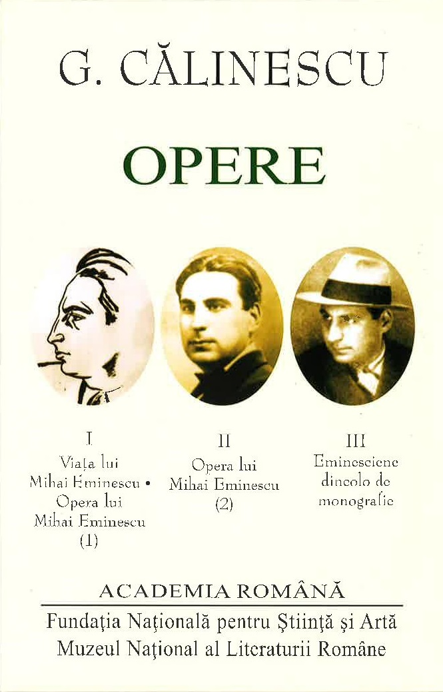

George Călinescu rămâne una dintre cele mai complexe și influente personalități ale literaturii române, un om de cultură care a marcat profund modul în care înțelegem și studiem literatura. Critic literar de excepție, istoric al literaturii, romancier, eseist și academician, Călinescu a oferit o viziune amplă și detaliată asupra evoluției literaturii române, conturând repere esențiale pentru generații întregi de cititori și cercetători. Prin lucrări monumentale precumIstoria literaturii române de la origini până în prezent, a redefinit studiul literaturii, oferind o perspectivă unică asupra scriitorilor și operelor esențiale din cultura română. În paralel, romanele sale, precum Enigma Otiliei sau Scrinul negru , demonstrează o profundă înțelegere a sufletului uman și a societății. Acest site este dedicat explorării vieții și operei sale, oferind analize, interpretări și resurse pentru toți cei interesați de moștenirea sa culturală. Indiferent dacă ești student, profesor, cercetător sau pur și simplu pasionat de literatură, aici vei găsi informații valoroase despre una dintre cele mai mari figuri ale culturii românești. |
|
Biografia lui George Călinescu surprinde parcursul remarcabil al uneia dintre cele mai influente personalități ale literaturii române. Născut în 1899, Călinescu a fost critic literar, istoric, romancier și academician, contribuind semnificativ la cultura română prin opere fundamentale. A studiat la Universitatea din București, iar de-a lungul carierei sale a publicat lucrări esențiale precum Istoria literaturii române de la origini până în prezent și romane celebre precum Enigma Otiliei. Prin activitatea sa, a redefinit studiul literaturii și a influențat generații de scriitori și critici. Apasă aici pentru mai multe detalii |
Operele literare ale lui George Călinescu reprezintă o contribuție esențială la literatura română, îmbinând profunzimea analizei critice cu talentul de romancier. Printre cele mai cunoscute scrieri se numără romanele Enigma Otiliei, Bietul Ioanide și Scrinul negru, în care explorează societatea românească și natura umană printr-un stil realist și minuțios. Pe lângă acestea, a scris și biografii literare dedicate unor mari scriitori români, precum Viața lui Mihai Eminescu și Viața lui Ion Creangă, oferind perspective valoroase asupra creației lor. Apasă aici pentru mai multe detalii |
 |